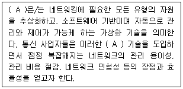
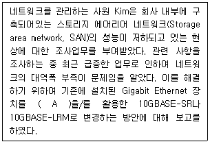
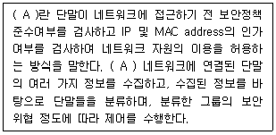
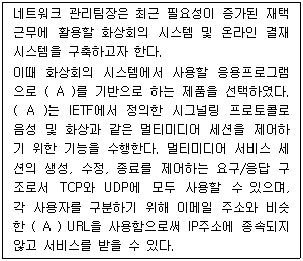
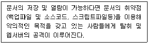
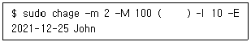
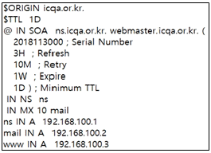
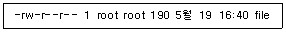
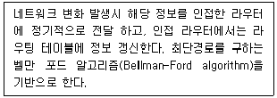

네트워크관리사-2급 (2022-08-21 기출문제)
1과목: TCP/IP
1. IP Header의 내용 중 TTL(Time To Live)의 기능을 설명한 것으로 옳지 않은 것은?
- IP 패킷은 네트워크상에서 영원히 존재할 수 있다.
- 일반적으로 라우터의 한 홉(Hop)을 통과할 때마다 TTL 값이 '1' 씩 감소한다.
- Ping과 Tracert 유틸리티는 특정 호스트 컴퓨터에 접근을 시도하거나 그 호스트까지의 경로를 추적할 때 TTL 값을 사용한다.
- IP 패킷이 네트워크상에서 얼마동안 존재 할 수 있는가를 나타낸다.
(정답률: 86%)

2. IP Address ′11101011.10001111.11111100.11001111′ 가 속한 Class는?
- A Class
- B Class
- C Class
- D Class
(정답률: 74%)
3. C Class 네트워크에서 6개의 서브넷이 필요하다고 할 때 가장 적당한 서브넷 마스크는?
- 255.255.255.0
- 255.255.255.192
- 255.255.255.224
- 255.255.255.240
(정답률: 74%)
4. IPv6 헤더 형식에서 네트워크 내에서 데이터그램의 생존 기간과 관련되는 필드는?
- Version
- Priority
- Next Header
- Hop Limit
(정답률: 74%)
5. IPv4와 비교하였을 때, IPv6 주소체계의 특징으로 옳지 않은 것은?
- 64비트 주소체계
- 향상된 서비스품질 지원
- 보안기능의 강화
- 자동 주소설정 기능
(정답률: 83%)
6. NAT(Network Address Translation)에 대한 설명으로 옳지 않은 것은?
- 사설 IP 주소를 공인 IP 주소로 바꿔주는데 사용하는 통신망의 주소 변환기술이다.
- NAT를 사용할 경우 내부 사설 IP 주소는 C Class를 사용해야만 정상적인 동작이 가능하다.
- 외부 침입자가 공격하기 위해서는 사설망의 내부 사설 IP 주소를 알아야 하기 때문에 공격이 어려워지므로 내부 네트워크를 보호할 수 있는 장점이 있다.
- NAT를 이용하면 한정된 공인 IP 주소를 절약 할 수 있다.
(정답률: 81%)
7. UDP에 대한 설명으로 옳지 않은 것은?
- 동영상에 있어서는 얼마만큼 데이터가 정확하게 전달되었는지 보다 얼마만큼 끊기지 않고 전달되었는지가 중요하기 때문에 동영상 전송에 많이 사용된다.
- OSI 7 계층 모델에서 전송 계층에 속한다.
- 양방향 전송을 하며, 종단 간의 흐름제어를 위해 Dynamic Sliding Window 방식을 사용한다.
- TCP와 비교하여 최소한의 오버 헤드를 갖는 작은 헤더를 갖는다.
(정답률: 74%)
8. OSI 7 Layer에 따라 프로토콜을 분류하였을 때, 다음 보기들 중 같은 계층에서 동작하지 않는 것은?
- SMTP
- RARP
- ICMP
- IGMP
(정답률: 72%)
9. 인터넷 전송 방식 중, 특정 호스트로부터 같은 네트워크상의 모든 호스트에게 데이터를 전송하는 방식은?
- Unicast
- Broadcast
- Multicast
- User Datagram Protocol
(정답률: 78%)
10. 네트워크 장비를 관리 감시하기 위한 목적으로 TCP/IP 상에 정의된 응용 계층의 프로토콜로, 네트워크 관리자가 네트워크 성능을 관리하고 네트워크 문제점을 찾아 수정하는데 도움을 주는 것은?
- SNMP
- CMIP
- SMTP
- POP
(정답률: 79%)
11. IP Address ′127.0.0.1′ 이 의미하는 것은?
- 모든 네트워크를 의미한다.
- 사설 IP Address를 의미한다.
- 특정한 네트워크의 모든 노드를 의미한다.
- 루프 백 테스트용이다.
(정답률: 83%)
12. MAC Address를 IP Address로 변환시켜주는 Protocol은?
- RARP
- ARP
- TCP/IP
- DHCP
(정답률: 75%)
13. 호스트의 IP Address가 ′201.100.5.68/28′일 때, Network ID로 올바른 것은?
- 201.100.5.32
- 201.100.5.0
- 201.100.5.64
- 201.100.5.31
(정답률: 65%)
14. ICMP 메시지가 사용되는 경우에 대한 설명으로 옳지 않은 것은?
- 라우터나 호스트 간의 제어 또는 오류정보를 주고 받을 경우
- 호스트나 라우터가 IP 헤더의 문법 오류를 발견한 경우
- 호스트의 IP가 중복된 경우
- 라우터가 데이터를 전달할 수 없는 경우
(정답률: 64%)
15. TCP를 사용하는 프로토콜로 옳지 않은 것은?
- FTP
- TFTP
- Telnet
- SMTP
(정답률: 59%)
16. 프로토콜의 기본적인 기능 중, 송신기에서 발생된 정보의 정확한 전송을 위해 사용자 정보의 앞, 뒤 부분에 헤더와 트레일러를 부가하는 과정은?
- 캡슐화(Encapsulation)
- 동기화(Synchronization)
- 다중화(Multiplexing)
- 주소지정(Addressing)
(정답률: 77%)
17. IGMP(Internet Group Management Protocol)의 특징으로 옳지 않은 것은?
- TTL(Time to Live)이 제공된다.
- 데이터의 유니캐스팅에 적합한 프로토콜이다.
- 최초의 리포트를 잃어버리면 갱신하지 않고 그대로 진행한다.
- 비대칭 프로토콜이다.
(정답률: 58%)
2과목: 네트워크 일반
18. 클라우드 컴퓨팅의 서비스 내용에 따른 분류가 아닌 것은?
- SaaS(Software as a Service)
- PaaS(Platform as a Service)
- IaaS(Infrastructure as a Service)
- Public 클라우드
(정답률: 68%)
19. 다음의 (A)에 들어갈 알맞은 용어는 무엇인가?

- NFV (Network Functions Virtualization)
- WMN (Wireless Mesh Network)
- VPN (Virtual Private Network)
- CDN (Content Delivery Network)
(정답률: 58%)
20. 다음은 네트워크 구축에 필요한 매체에 관한 내용이다. (A) 안에 들어가는 용어 중 옳은 것은?

- U/UTP CAT.3
- Thin Coaxial Cable
- U/FTP CAT.5
- Optical Fiber Cable
(정답률: 77%)
21. 전송효율을 최대로 하기 위해 프레임의 길이를 동적으로 변경시킬 수 있는 ARQ(Automatic Repeat Request)방식은?
- Adaptive ARQ
- Go back-N ARQ
- Selective-Repeat ARQ
- Stop and Wait ARQ
(정답률: 72%)
22. 다음 (A) 안에 들어가는 용어 중 옳은 것은?

- NIC
- F/W
- IPS
- NAC
(정답률: 65%)
23. Bus Topology의 설명 중 올바른 것은?
- 문제가 발생한 위치를 파악하기가 쉽다.
- 각 스테이션이 중앙스위치에 연결된다.
- 터미네이터(Terminator)가 시그널의 반사를 방지하기 위해 사용된다.
- Token Passing 기법을 사용한다.
(정답률: 71%)
24. 인접한 개방 시스템 사이의 확실한 데이터 전송 및 전송 에러제어 기능을 갖고 접속된 기기 사이의 통신을 관리하고, 신뢰도가 낮은 전송로를 신뢰도가 높은 전송로로 바꾸는데 사용되는 계층은?
- 물리 계층(Physical Layer)
- 네트워크 계층(Network Layer)
- 전송 계층(Transport Layer)
- 데이터링크 계층(Datalink Layer)
(정답률: 59%)
25. 다음은 화상 회의를 하기 위한 기술에 관한 내용이다. (A) 안에 들어가는 용어 중 옳은 것은?

- IRC (Internet Relay Chat)
- HEVC/H.265 (High Efficiency Video Coding)
- MIME (Multipurpose Internet Mail Extensions)
- SIP (Session Initiation Protocol)
(정답률: 45%)
26. 패킷 교환망의 특징으로 옳지 않은 것은?
- 연결설정에 따라 가상회선과 데이터그램으로 분류된다.
- 메시지를 보다 짧은 길이의 패킷으로 나누어 전송한다.
- 망에 유입되는 데이터의 양이 많아질수록 전송속도가 빠르다.
- 블록킹 현상이 없다.
(정답률: 80%)
27. Multiplexing 방법 중에서 다중화 시 전송할 데이터가 없더라도 타임 슬롯이 할당되어 대역폭의 낭비를 가져오는 다중화 방식은?
- TDM(Time Division Multiplexer)
- STDM(Statistical Time Division Multiplexing)
- FDM(Frequency Division Multiplex)
- FDMA(Frequency Division Multiple Access)
(정답률: 58%)
3과목: NOS
28. 웹서버 관리자는 아래 지문에서 이야기한 공격에 대응하기 위해 인터넷 정보 서비스 관리자에 설정하지 않아야 하는 것은?

- HTTP 응답 헤더
- 디렉터리 검색
- SSL 설정
- 인증
(정답률: 70%)
29. 서버담당자 LEE 사원은 회사 전산실에 Windows Server 2016을 구축하고, Hyper-V 가상화 기술을 적용하려고 한다. Hyper-V에 대한 설명으로 옳지 않은 것은?
- 하드웨어 사용률을 높여 물리적인 서버의 운영 및 유지 관리 비용을 줄일 수 있다.
- 서버 작업을 실행하는데 필요한 하드웨어 양을 줄일 수 있다.
- 테스트 환경 재현 시간을 줄여 개발 및 테스트 효율성을 향상 시킬 수 있다.
- 장애 조치 구성에서 필요한 만큼 물리적인 컴퓨터를 사용하므로 서버 가용성이 줄어든다.
(정답률: 73%)
30. Linux 시스템 관리자는 John사원의 계정인 John의 패스워드 정책을 변경하기 위해 아래 지문과 같이 입력하였다. 10일전 암호변경 경고를 위한 명령으로 ( )안에 알맞은 옵션은?

- -m 10
- - L 10
- - i 10
- - W 10
(정답률: 70%)
31. Linux 시스템 담당자 Park 사원은 Linux 시스템 운영관리를 위해 시스템이 부팅할 때 생성된 시스템 로그를 살펴보고자 한다. 하드웨어적인 이상 유무나 디스크, 메모리, CPU, 커널 등의 이상 유무를 확인할 수 있는 로그파일은?
- /var/log/cron
- /var/log/lastlog
- /var/log/dmesg
- /var/log/btmp
(정답률: 62%)
32. bind 패키지를 이용하여 네임서버를 구축할 경우 ′/var/named/icqa.or.kr.zone′의 내용이다. 설정의 설명으로 옳지 않은 것은?

- ZONE 파일의 영역명은 ′icqa.or.kr′ 이다.
- 관리자의 E-Mail 주소는 ′webmaster.icqa.or.kr′ 이다.
- 메일 서버는 10번째 우선순위를 가지며 값이 높을수록 우선순위가 높다.
- ′www′ 의 FQDN은 ′www.icqa.or.kr′ 이다.
(정답률: 72%)
33. ′netstat′ 명령어에 사용하는 옵션 설명에 대해 옳지 않은 것은?
- -r : 라우팅 테이블을 표시한다.
- -p : PID와 사용중인 프로그램명을 출력한다.
- -t : 연결된 이후에 시간을 표시한다.
- -y : 모든 연결에 대한 TCP 연결 템플릿을 표시한다.
(정답률: 59%)
34. 다음과 같이 파일의 원래 권한은 유지한 채로 모든 사용자들에게 쓰기 가능한 권한을 추가부여할 때, 결과가 다른 명령어는 무엇인가?

- chmod 666 file
- chmod a+w file
- chmod ugo+w file
- chmod go=w file
(정답률: 64%)
35. 서버 담당자 Park 사원은 데이터를 안전하게 보호하는 일을 하기 위해 BitLocker 기능을 사용하고자 한다. BitLocker를 사용하기 위해서 메인보드와 BIOS에서 지원해야 하는 기능은 무엇인가?
- FSRM
- NTLM
- TPM
- Heartbeat
(정답률: 47%)
36. Windows Server 2016 DHCP 서버의 주요 역할의 설명으로 맞는 것은?
- 동적 콘텐츠의 HTTP 압축을 구성하는 인프라를 제공한다.
- TCP/IP 네트워크에 대한 이름을 확인한다.
- IP 자원의 효율적인 관리 및 IP 자동 할당한다.
- 사설 IP주소를 공인 IP 주소로 변환해 준다.
(정답률: 73%)
37. TCP 3Way-HandShaking 과정 중 클라이언트가 보낸 연결 요청에서 패킷을 수신한 서버는 LISTEN 상태에서 무슨 상태로 변경되는가?
- SYN_SENT
- SYN_RECEIVED
- ESTABLISHED
- CLOSE
(정답률: 74%)
38. Windows Server 2016의 이벤트 뷰어에서 로그온, 파일, 관리자가 사용한 감사 이벤트 등을 포함해서 모든 감사된 이벤트를 보여주는 로그는?
- 응용 프로그램 로그
- 보안 로그
- 설치 로그
- 시스템 로그
(정답률: 63%)
39. Linux 시스템에 새로운 사용자를 등록하려고 한다. 유저 이름은 ′network′로 하고, ′icqa′라는 그룹에 편입시키는 명령은?
- useradd -g icqa network
- useradd network
- userdel -g icqa network
- userdel network
(정답률: 81%)
40. 윈도우 서버에서 FTP(File Transfer Protocol)을 구축 운영하기 위해 먼저 설치 되어 있어야 하는 서버는 무엇인가?
- Active Directory
- 도메인 네임 시스템(Domain Name System)
- 인터넷 정보 서비스(Internet Information Services)
- 데이터베이스 서버
(정답률: 54%)
41. Windows Server 2016의 윈도우 서버 백업 실행방법은?
- diskmgmt.msc
- wbadmin.msc
- hdwwiz.cpl
- fsmgmt.msc
(정답률: 55%)
42. Linux의 vi(Visual Interface) 명령어 중 문자 하나를 삭제할 때 사용하는 명령어는?
- dd
- x
- D
- dw
(정답률: 63%)
43. Linux에서 현재 사용 디렉터리 위치에 상관없이 자신의 HOME Directory로 이동하는 명령은?
- cd HOME
- cd /
- cd ../HOME
- cd ~
(정답률: 65%)
44. Linux 시스템에서 일반적으로 사용자 암호 정보를 가지는 디렉터리는?
- /etc
- /sbin
- /home
- /lib
(정답률: 64%)
45. Linux에서 ′ifconfig′ 명령어를 설치하여 네트워크 인터페이스 카드를 동작시키려고 한다. 명령어에 대한 사용이 올바른 것은?
- ifconfig 192.168.2.4 down
- ifconfig eth0 192.168.2.4 up
- ifconfig -up eth0 192.168.2.4
- ifconfig up eth0 192.168.2.4
(정답률: 60%)
4과목: 네트워크 운용기기
46. OSI 참조모델의 물리계층에서 작동하는 네트워크 장치는?
- L3 Switch
- Bridge
- Router
- Repeater
(정답률: 73%)
47. 한 대의 스위치에서 네트워크를 나누어 마치 여러 대의 스위치처럼 사용할 수 있게 하고, 하나의 포트에 여러 개의 네트워크 정보를 전송할 수 있게 해주는 기능은?
- 스패닝 트리 프로토콜
- 가상 랜(Virtual LAN)
- TFTP 프로토콜
- 가상 사설망(VPN)
(정답률: 74%)
48. RAID의 구성에서 미러링모드 구성이라고도 하며 디스크에 있는 모든 데이터는 동시에 다른 디스크에도 백업되어 하나의 디스크가 손상되어도 다른 디스크의 데이터를 사용할 수 있게 한 RAID 구성은?
- RAID 0
- RAID 1
- RAID 2
- RAID 3
(정답률: 72%)
49. 아래 지문은 라우팅의 Distance Vector방식을 설명한 것인다. 이에 해당하지 않는 프로토콜은 무엇인가?

- IGRP
- RIP
- BGP
- OSPF
(정답률: 58%)
50. 게이트웨이(Gateway)에 대한 설명으로 옳지 않은 것은?
- OSI 참조 모델에서 전송계층만 연결하는 네트워크 장비이다.
- 두 개의 완전히 다른 네트워크 사이의 데이터 형식을 변환하는 장치이다.
- 데이터 변환의 기능을 가지고 있어 네트워크내의 병목 현상을 일으키는 지점이 될 수 있다.
- 프로토콜이 다른 네트워크 환경들을 연결할 수 있는 기능을 제공한다.
(정답률: 56%)
TTL(Time To Live)은 IP 패킷이 네트워크 상에서 얼마나 오래 존재할 수 있는지를 나타내는 값이다. 일반적으로 라우터의 한 홉(Hop)을 통과할 때마다 TTL 값이 '1' 씩 감소하며, TTL 값이 0이 되면 해당 패킷은 폐기된다. Ping과 Tracert 유틸리티는 특정 호스트 컴퓨터에 접근을 시도하거나 그 호스트까지의 경로를 추적할 때 TTL 값을 사용한다. 따라서 IP 패킷은 네트워크상에서 영원히 존재할 수 없다.